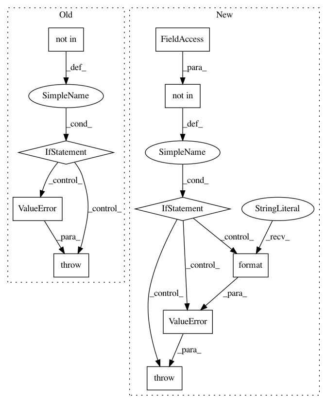

66146cc04fac06e19e8f7386b933d18c9344b232,keras_preprocessing/image/dataframe_iterator.py,DataFrameIterator,__init__,#DataFrameIterator#,79
Before Change
self.df[x_col] = self.df[x_col].astype(str)
self.directory = directory
self.classes = classes
if class_mode not in {"categorical", "binary", "sparse",
"input", "other", None}:
raise ValueError("Invalid class_mode:", class_mode,
" expected one of "categorical", "
""binary", "sparse", "input""
""other" or None.")
self.class_mode = class_mode
self.dtype = dtype
// First, count the number of samples and classes.
self.samples = 0
After Change
self.df[x_col] = self.df[x_col].astype(str)
self.directory = directory
self.classes = classes
if class_mode not in self.allowed_class_modes:
raise ValueError("Invalid class_mode: {}; expected one of: {}"
.format(class_mode, self.allowed_class_modes))
self.class_mode = class_mode
self.dtype = dtype
// First, count the number of samples and classes.
self.samples = 0
In pattern: SUPERPATTERN
Frequency: 3
Non-data size: 10
Instances
Project Name: keras-team/keras-preprocessing
Commit Name: 66146cc04fac06e19e8f7386b933d18c9344b232
Time: 2018-12-27
Author: rragundez@users.noreply.github.com
File Name: keras_preprocessing/image/dataframe_iterator.py
Class Name: DataFrameIterator
Method Name: __init__
Project Name: keras-team/keras-preprocessing
Commit Name: 66146cc04fac06e19e8f7386b933d18c9344b232
Time: 2018-12-27
Author: rragundez@users.noreply.github.com
File Name: keras_preprocessing/image/directory_iterator.py
Class Name: DirectoryIterator
Method Name: __init__
Project Name: has2k1/plotnine
Commit Name: a85342eee955a8630719678d96cd96e96cdcf6b2
Time: 2019-08-14
Author: has2k1@gmail.com
File Name: plotnine/geoms/annotation_stripes.py
Class Name: annotation_stripes
Method Name: __init__